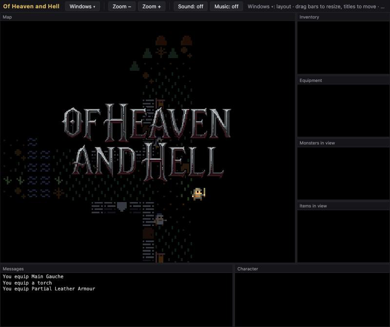
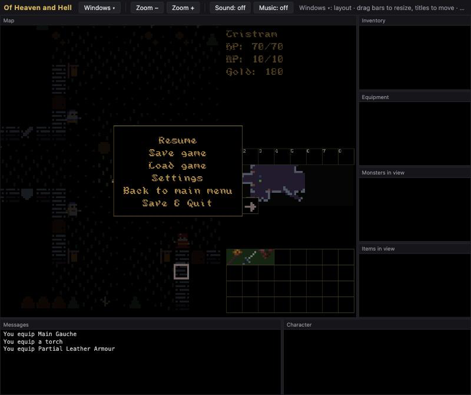

Of Heaven and Hell
Completion ▰▰▰▰▰▰▰▱▱▱ 70% · story in place, pacing and own ideas still open
The browser version runs the Heaven & Hell mod and nothing else. The deploy script copies only that mod into the WebAssembly build, so there is no mod to pick there. The Diablo 1 rebuild lives in the same repo as a second mod, but only the desktop build has it. What's online is the build of 2026-09-26, the last commit.
You pick a Warrior, an Archer or a Mage, with optional permadeath, and start in Tristram. Below it are 16 levels: Cathedral, Catacombs, Caves, Hell. It's turn-based on a grid, and you only see as far as your torch or lantern reaches, the Angband way. Kirioth sends you after Meat Jack, Abel after the poisoned water, Shekel after King Zedek, and then Kirioth sends you after Lucifer on Hell 16. Sister Mary's lost pilgrims are on Caves 10.
With Lucifer dead, the Town in Hell opens, and a second act sends you through the Dungeon of Doom and the Merchant District after the adventurers, Shekel and Kirioth. Killing Kirioth turns the game into new game plus. The levels are D1-shaped and borrow D1's monster brains, but the story, classes and items are mine. On the page, the map, inventory, log and the other panels sit in windows you can resize and swap.
History
- 2024-01 First commit, a better light system, a terminal/ASCII mode, then a commit called "data driven".
- 2024-02 Long lists of armor and weapon data, the Earth Shaker and Earthquake skills, basic buying in console mode, start and end screens, and an embedded filesystem for the build. All of it during a 7DRL branch.
- 2024-03 – 2026-08 Nothing. No commits for two and a half years.
- 2026-09-14/15
D1_PLAN.md: rebuild Diablo 1 as a turn-based game on the H&H engine. All seven milestones landed in two days, from the Cathedral slice to the Diablo ending. The H&H story, generator and level templates (about 16k lines) were deleted. - 2026-09-16/18 A Hellfire expansion pass with six classes, the Nest and Crypt, icon remapping for D1's monsters, save slots and a character sheet.
- 2026-09-21
ENGINE_SPLIT.md: engine and content separated. A mod overlay filesystem, D1's tables moved intofiles/mods/d1, and H&H's effect engine came back. Over 160 commits that day. - 2026-09-22 Heaven & Hell is the default mod again, with its own lighting, item names, Lucifer's evidence quest and a second act. The repo was reorganized so mods own all content.
- 2026-09-23/24 One level strategy interface with generic layout passes. D1's ported generators were deleted (12k lines) and H&H got D1's 16-level ladder, borrowed monster families and boss mechanics.
- 2026-09-24 An autoplay bot, Borg-style, plays runs to compare pacing against D1. You can also watch it.
- 2026-09-25/26
deploy_web.shbuilds H&H for the browser and uploads it, with resizable feed windows, a window manager and a top bar for zoom, sound and music.
Features
- Turn-based grid combat on an energy clock: every action costs time.
- Data-driven mods. Heaven & Hell (the one online) and a turn-based Diablo 1 rebuild run on the same engine, and the desktop build can switch between them.
- Three classes: Warrior, Archer, Mage.
- Tristram, 16 levels (Cathedral, Catacombs, Caves, Hell), a Poisoned Water Supply side cave, the Town in Hell, the Dungeon of Doom and the Merchant District.
- Ten quests over two acts, from Meat Jack to Kirioth, and new game plus after the last one.
- Carried light, Angband style: torch radius 2, lantern 3, and monsters see your light from the dark and hear you nearby.
- Save slots, with optional permadeath.
- Graphical tiles, plus an ASCII terminal mode in the desktop build.
- An autoplay bot that plays runs to measure pacing, which you can also watch.
Under the hood
The whole Diablo timing model fits on one line. Animation ticks become game time, so D1's walk-to-attack ratio holds in a turn-based game (src/common/hero.go):
func ticksToAUT(ticks int) int { return (ticks*10 + rules.RefWalkTicks/2) / rules.RefWalkTicks }The autoplay bot borrows from the Angband Borg, and the comment says so (src/app/autoplay.go):
// The ideas are the Angband Borg's (repo.or.cz/angband/borg.git), cut down: explore everything, cast what reaches
// the nearest enemy, else fight it, drink below half health, equip what beats what it wears, and go home when a
// fight turns bad or the light burns out, buying healing potions and a light there.The bot also gets an honest shortcut note:
// ponytail: the portal is free and the bot never identifies; model them when they start to matter.Moria's Balrog sits in docs/TODO.md as a raw C struct, as a reference for end-boss stats:
{"Balrog", 0xFF1F0002L, 0x0081C743L, 0x5004, 55000L, 0, 40, 125, 13, 'B', { 75, 40}, {104, 78, 214, 0}, 100}Ideas & inspirations
Angband and Diablo, all the way down. The README starts with "This won't win any awards in terms of innovation anytime soon, I know." docs/D1_PLAN.md sets the later goal: "play through the complete Diablo 1 game as a turn-based variant."
The early notes go elsewhere. docs/ideas.md opens with "DO NOT FIGHT BUT BE CLEVER." and sketches a reversed Rogue: you start at the bottom of a dungeon, and you score only by carrying gold out. docs/osr_crawl.txt wants an OSR-style crawl where ropes and torches matter and fighting is usually a bad idea. docs/quickband.txt copies a Moria-style shop list.
The TODO has a list called "Bring back the concepts from my own game": starting in hell, switching sides, a black horse with movement-based combat, a possessed adventurer's party as enemies. It also collects monster skills worth stealing from Moria, DCSS, Rogue and Brogue. Lower down sit iconic touches I'd still like, such as Cain's "Stay a while, and listen."
Where it started, where it ended
It started as my own setting: Meat Jack, Zedek, Lucifer, a town in hell, 12 levels. In September 2026 that setting was deleted to make room for Diablo 1, and a week later it came back as a mod on Diablo-shaped levels. So it ended about where it started, only with more machinery underneath.
State of the repo
The last commit is from 2026-09-26, and it builds cleanly. All seven milestones in D1_PLAN.md are checked off, from the Cathedral slice through quests and the ending. handover.md is a leftover: the stand-in generator branch it describes was merged on 2026-09-24.
design-todo.md has 13 items done and 11 open. The open ones are mostly pacing: H&H still takes about 1.45× D1's walking per level, autoplay isn't fully deterministic per seed, and tactics barely pay off yet. docs/TODO.md still lists gamepad support, an affix cleanup, interesting bosses and all the "my own game" concepts. The Diablo side is there. The part that would make it my game is not, so I'd put it at about 70%.
Is it a real game?
Complete. The online H&H mod has a town, 16 levels plus the second-act areas, ten quests, death with save slots or permadeath, an ending after Lucifer, then a second act that ends in new game plus. The D1 mod, desktop only, goes through to Diablo on level 16 and an end screen. The pacing still isn't where I want it.
Screenshots



Latest updates
- 2026-09-26 Web: window manager, Windows/Zoom/Sound/Music top bar
- 2026-09-25 Web: title links to the shrine page
- 2026-09-25 ASCII mode stays out of the web build
- 2026-09-25 Slimmer web build: fewer tracks and fonts, wasm-opt
- 2026-09-25 Resizable, swappable feed windows with per-window font size
- 2024-01-24 First commit